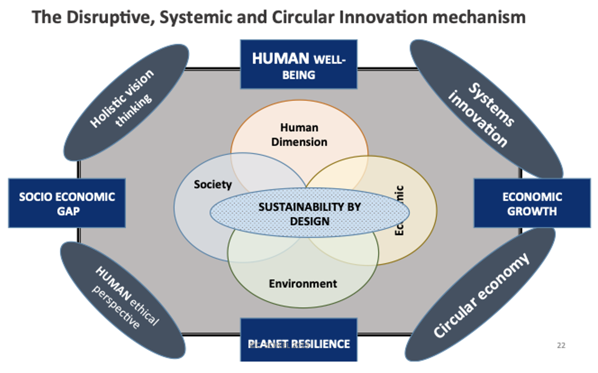
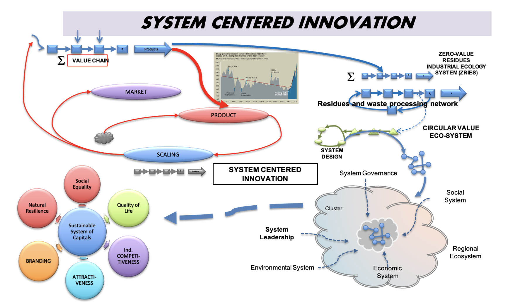

Disruptive, Systemic and Circular Innovation (DiSC)
The DiSC: Disruptive, systemic, and circular innovation is a concept based on systems-centered innovation (SCI) and industrial ecology, designed to articulate the three dimensions of the natural ecosystem: economic, social and environmental systems.

That creates the following synergies:

The DiSC approach has been designed to:
- Transform the conventional lineal paradigm of businesses
- Create a triple value proposition (TVP) that articulates the social values, the environmental relevant factors with a viable and competitive economic model creating a new model of sustainable growth
- Operate with a systemic, inclusive and holistic view
- Implement a circular approach for the recovering and regeneration of the planet´s resiliency, with precise and robust metrics of benefits for all stakeholders
- Establish a prosperous shared society
- Achieve a systemic leadership under a resource allocation management and a democratic governance of creativity, innovation and capital (SEE) for the production of “sustainable increasing returns” for all stakeholders of the SWIT model.
- References:
- Scheel, C., (2019). Comment l’innovation disruptive systémique et circulaire peut-elle créer des richesses durables. Ed. By D. Bretones. Les organisations face aux défis technologiques et sociétaux du XXIe siècle. Collection: Stratégie, management, organization.(Ch. 2. pp 97- 113) Editions MA-ESKA. France. ISBN: 978-2-8224-0589-8
- Scheel, C., & Aguiñaga, E. (2017). Economía Circular una alternativa a los limites del crecimiento lineal. Edited by E. Raufflet et al. Responsabilidad, Ética y Sostenibilidad Empresarial.(pp. 157-171). México. Pearson Publisher. ISBN 978-607-32-4161-8
- Scheel C. (2016) Innovación centrada en los sistemas. C. Scheel, R. Gomez-Tagle. La Innovación para un Mundo Sustentable. (pp. 88-99). Mexico. Ed. Font. ISBN 978-607-501-442-5.
https://www.amazon.com/Innovaci%C3%B3n-para-desarrollo-sustentable-democr%C3%A1tica-ebook/dp/B01M7ZUFSG
- Scheel, C., & Aguiñaga, E. (2015). A systemic approach to innovation: breaking the rules of conventional regional development: the cases of Mexico, Colombia, India and Brazil, edited by D. Trzmielak and D.V. Gibson, International Cases on Innovation, Knowledge and Technology Transfer(pp. 95-114). Łódź, Poland: Center for Technology Transfer UŁ. ISBN 978-83-922375-8-7